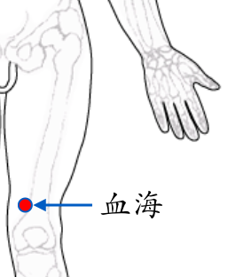

【穴位名稱】: 血海 (SP10)

【治療症狀】: 心絞痛 肚子痛 血尿 小便不利 陽萎 前列腺炎 尿路感染 月經不調 月經過少 月經過多 閉經 乳炎、乳癱 小兒驚厥 關節疼痛 皮膚容易化膿 皮膚粗糙 皮膚癢 蕁麻疹 青春痘 乾癬 濕疹 皮膚潰瘍 腳癬 雞眼 酒糟鼻 丹毒 手指化膿 腳趾化膿 異位性皮膚炎 帶狀皰疹 結節性紅斑 淋巴管炎(疔瘡) 淋巴腺炎 頭痛 發熱
【取穴位置】: 大腿內側，髕底內側端上2吋，當股四頭肌內側頭隆起處。《針灸甲乙經》：「在膝臏上內廉白肉際二寸半」；《千金要方》：「一作三寸」；《千金翼方》作「二寸」；《靈樞經脈翼》作「二寸中」；今皆從二寸，「半」字疑為「中」字之誤。《針方六集》：「一方以患人手按膝蓋骨上，大指向內。余四指向外，大指盡處是穴。」即以對側的手掌按其膝蓋，手指向上，拇指偏向大腿內側，當拇指端所止處。《循經考穴編》：「以虎口按犢鼻骨，取中指點到是。」
【針刺方法】: 直刺0.5～1.5吋。艾炷灸3～5壯，艾條灸5～15分鐘。